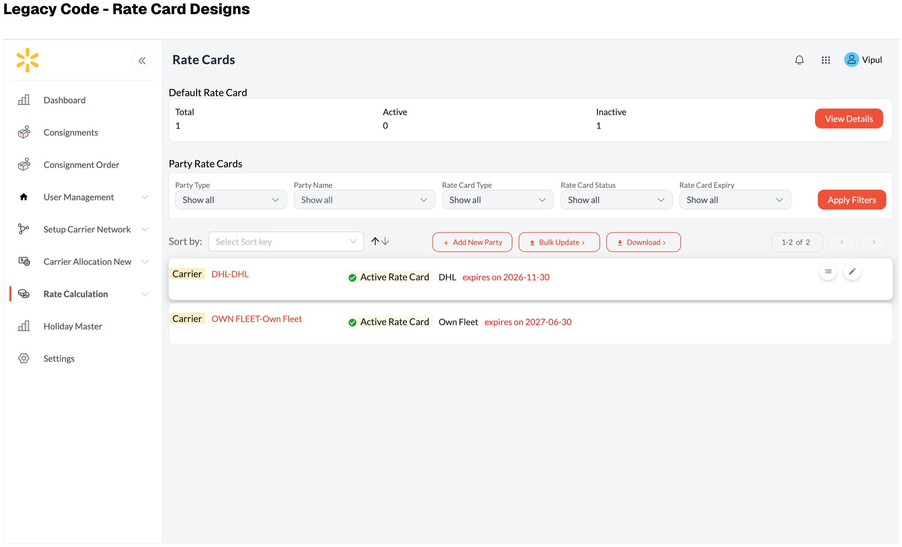

Legacy code
Starting constraint
An operational product that felt untouchable
The existing Rate Card experience predated my involvement. Its implementation was difficult to modify, while the workflow remained largely manual. The problem was not simply to refresh the interface; it was to create a credible path from legacy software to a product that could evolve.
